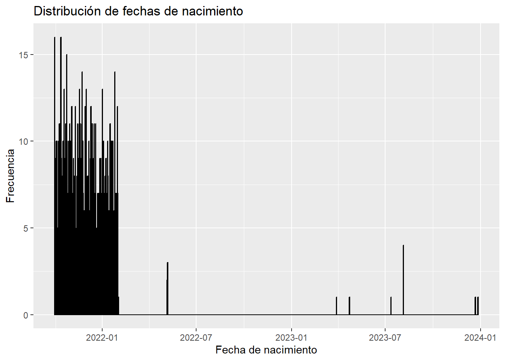
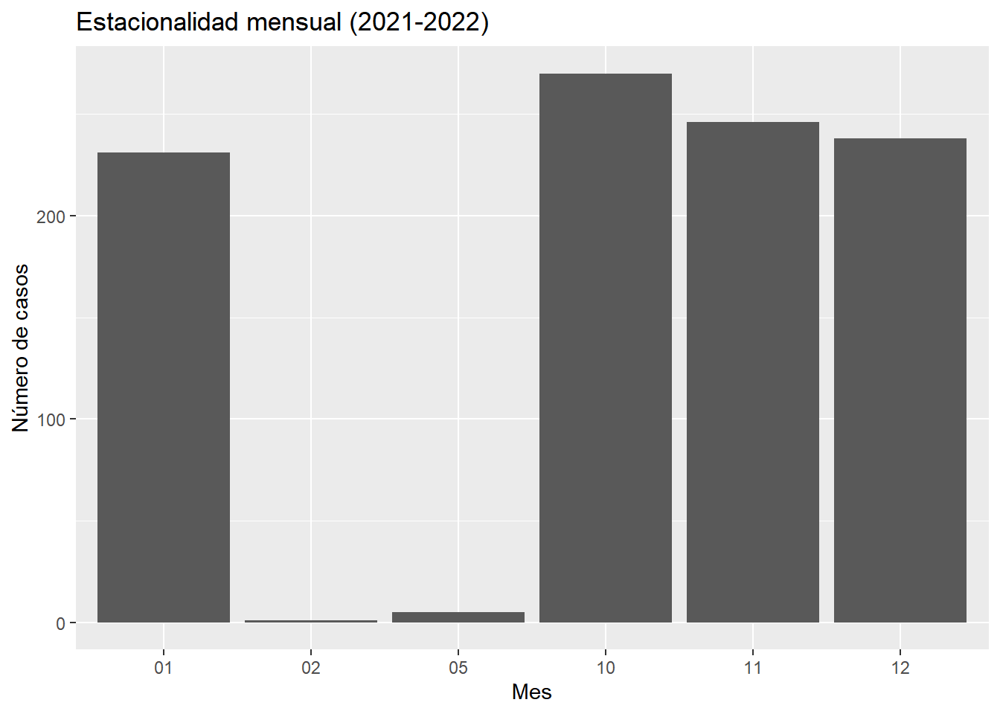

Capitulo 4 Estacionalidad
La estacionalidad en un conjunto de datos se refiere a patrones recurrentes o fluctuaciones que ocurren en intervalos de tiempo regulares, como días, semanas, meses o años. Estos patrones pueden deberse a factores estacionales, como cambios climáticos, festividades, o comportamientos estacionales en la demanda de ciertos productos o servicios.
La estacionalidad puede manifestarse de diferentes formas en los datos. Por ejemplo:
Estacionalidad aditiva: En este caso, las fluctuaciones estacionales tienen una magnitud constante a lo largo del tiempo.
Estacionalidad multiplicativa: Aquí, la magnitud de las fluctuaciones estacionales varía en función del nivel de la serie temporal.
La identificación de la estacionalidad en un conjunto de datos es importante porque puede ayudarte a entender mejor las tendencias y los patrones subyacentes en tus datos. Además, puede ser útil para predecir futuros valores y tomar decisiones informadas, especialmente en industrias donde los patrones estacionales tienen un impacto significativo, como el comercio minorista, el turismo o la agricultura.
library(readr)## Warning: package 'readr' was built under R version 4.3.3# Leer el conjunto de datos desde el archivo CSV
data <- read_csv("data.csv", show_col_types = FALSE)
# Convertir la columna fecha_nacimiento a formato de fecha
data$fecha_nacimiento <- as.Date(data$fecha_nacimiento)
# Crear una nueva columna que contenga solo el año, mes y día
data$fecha_nacimiento_nueva <- format(data$fecha_nacimiento, "%Y-%m-%d")
head(data)## # A tibble: 6 × 32
## departamento municipio area_nacimiento sexo peso_gramos talla_cent_metros
## <chr> <chr> <chr> <chr> <dbl> <dbl>
## 1 ANTIOQUIA ENVIGADO CABECERA MUNICIPAL MASCU… 2085 45
## 2 ANTIOQUIA ENVIGADO CABECERA MUNICIPAL FEMEN… 3000 47
## 3 ANTIOQUIA ENVIGADO CABECERA MUNICIPAL MASCU… 2905 50
## 4 ANTIOQUIA ENVIGADO CABECERA MUNICIPAL FEMEN… 3700 50
## 5 ANTIOQUIA ENVIGADO CABECERA MUNICIPAL FEMEN… 3130 49
## 6 ANTIOQUIA ENVIGADO CABECERA MUNICIPAL MASCU… 3830 54
## # ℹ 26 more variables: fecha_nacimiento <date>, tiempo_de_gestaci_n <dbl>,
## # n_mero_consultas_prenatales <dbl>, tipo_parto <chr>,
## # multiplicidad_embarazo <chr>, pertenencia_tnica <chr>,
## # grupo_indigena <chr>, edad_madre <dbl>, r_gimen_seguridad <chr>,
## # nombre_administradora <chr>, edad_padre <dbl>, nivel_educativo_padre <chr>,
## # departamento_expedici_n <chr>, municipio_expedici_n <chr>,
## # estado_conyugal_de_la_madre <chr>, nivel_educativo_de_la_madre <chr>, …library(ggplot2)## Warning: package 'ggplot2' was built under R version 4.3.3# Convertir la columna fecha_nacimiento_nueva de caracteres a fecha
data$fecha_nacimiento_nueva <- as.Date(data$fecha_nacimiento_nueva)
# Crear un histograma de las fechas de nacimiento
ggplot(data, aes(x = fecha_nacimiento_nueva)) +
geom_histogram(binwidth = 1, color = "black", fill = "blue") +
labs(title = "Distribución de fechas de nacimiento",
x = "Fecha de nacimiento",
y = "Frecuencia")
library(lubridate)
library(readr)
library(dplyr)
library(ggplot2)
# Extraer el mes y el año de la fecha
# Filtrar datos del año 2021 a 2022
data_filtrado <- data %>%
filter(year(fecha_nacimiento) >= 2021 & year(fecha_nacimiento) <= 2022)
# Extraer el mes y el año de la fecha
data_filtrado$mes <- format(data_filtrado$fecha_nacimiento, "%m")
data_filtrado$año <- format(data_filtrado$fecha_nacimiento, "%Y")
# Contar el número de casos por mes y año
conteo_mes <- data_filtrado %>% group_by(mes) %>% summarise(casos = n())
conteo_año <- data_filtrado %>% group_by(año) %>% summarise(casos = n())
# Visualizar la estacionalidad a nivel mensual
ggplot(conteo_mes, aes(x = mes, y = casos)) +
geom_bar(stat = "identity") +
labs(title = "Estacionalidad mensual (2021-2022)",
x = "Mes",
y = "Número de casos")
library(plotly)
# Contar el número de casos por mes y año
conteo_mes_año <- data_filtrado %>%
group_by(año, mes) %>%
summarise(casos = n())
# Convertir la columna 'año' a factor para mantener el orden en el gráfico
conteo_mes_año$año <- factor(conteo_mes_año$año)
# Crear gráfico interactivo de barras
plot_ly(conteo_mes_año, x = ~mes, y = ~casos, color = ~año, type = "bar") %>%
layout(title = "Estacionalidad de mes por año (2021-2024)",
xaxis = list(title = "Mes"),
yaxis = list(title = "Número de casos"),
colorway = c("blue", "green", "red", "orange")) # Cambia los colores según sea necesario4.1 Porcentaje de Estacionalidad por Mes y Año (2021-2024)
La tabla a continuación muestra el porcentaje de estacionalidad por mes y año para el período comprendido entre 2021 y 2024. Estos datos representan la distribución relativa de casos a lo largo de los meses en cada año y proporcionan información sobre posibles patrones estacionales en la ocurrencia de eventos.
## Warning: package 'knitr' was built under R version 4.3.3| año | mes | porcentaje |
|---|---|---|
| 2021 | 10 | 35.8090186 |
| 2021 | 11 | 32.6259947 |
| 2021 | 12 | 31.5649867 |
| 2022 | 1 | 97.4683544 |
| 2022 | 2 | 0.4219409 |
| 2022 | 5 | 2.1097046 |
Estos datos revelan fluctuaciones significativas en la distribución de casos a lo largo de los meses, con algunos meses mostrando una concentración notable de casos, mientras que otros muestran una ocurrencia mínima. En el año 2022, por ejemplo, enero destaca con un porcentaje extremadamente alto de 97.47%, lo que sugiere una concentración significativa de casos en ese mes. Por otro lado, febrero muestra un porcentaje mínimo de 0.42%, indicando una ocurrencia muy baja de casos durante ese período. Mayo también muestra un pequeño aumento en la estacionalidad con un porcentaje del 2.11%, aunque sigue siendo relativamente bajo en comparación con otros meses.